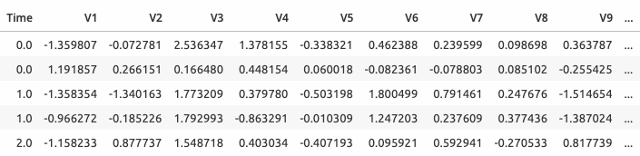
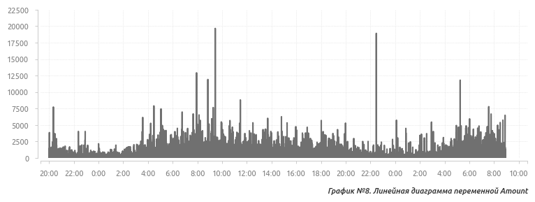
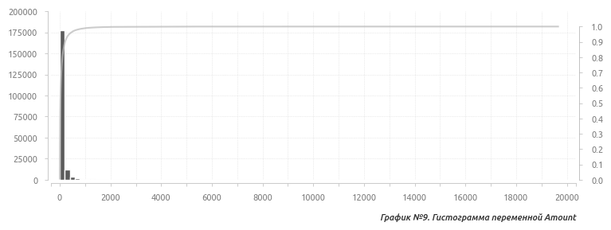
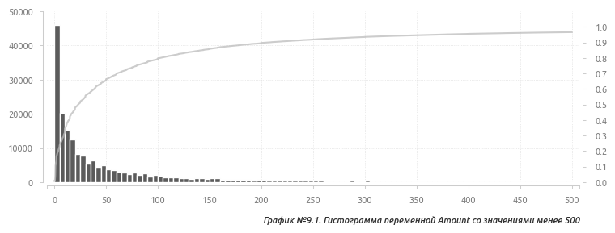
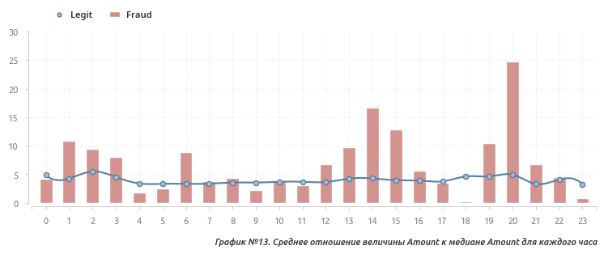
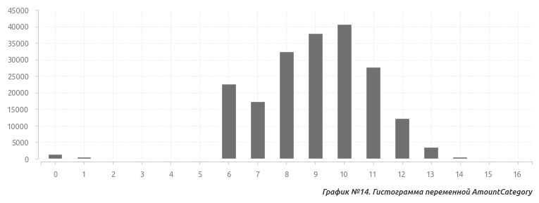
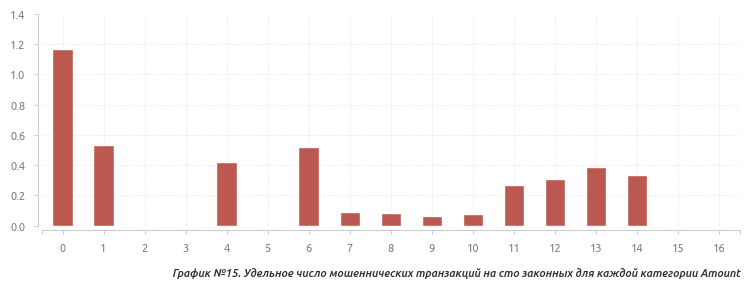
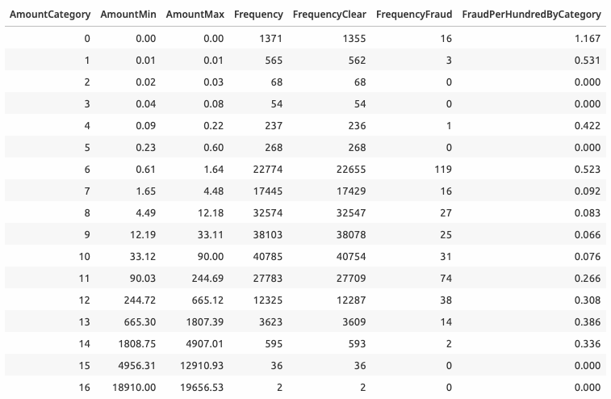
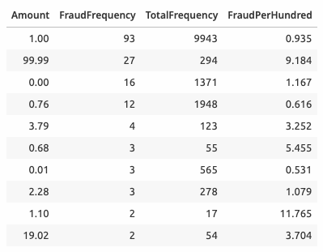

Описание датасета
В работе используется популярный датасет Kaggle с информацией о банковских транзакциях.
Страница датасета на сайте Kaggle
- Число элементов: 284807;
- Количество переменных: 31;
- Целевая переменная: категориальная (бинарная).

- Time - время, прошедшее с момента совершения первой транзакции;
- V1...V28 - переменные, полученные после преобразования сырых данных с помощью PCA;
- Amount - сумма транзакции;
- Class - метка мошенничества (целевая переменная);
Целевая переменная бинарна и не сбалансирована: 284315 нулевых значений против 492 единиц (0.172% от общего количества). Все предикторы являются количественными переменными. Пропущенные значения отсутствуют.
Данные разбиваются на два датасета в соотношении 3 к 7: обучающий (199364) и проверочный (85443).
В первую очередь исследуются переменные с известным контекстом, а именно: время совершения транзакции (Time), сумма транзакции (Amount) и метка мошенничества (Class).
Переменная Time
Time - количественная переменная, единицы измерения - секунды.
Пропущенные значения отсутствуют, почти половина значений - уникальные (45% от общего числа). Гистограмма показывает достаточно равномерное распределение данных в районе отметки в 4000 элементов с двумя минимумами около 15000 и 100000 секунд.
 Отобразим количество транзакций на единицу времени с помощью точечной диаграммы: в области плато это количество примерно 7-8 на единицу времени, а в районе минимумов - примерно 1-3.
Отобразим количество транзакций на единицу времени с помощью точечной диаграммы: в области плато это количество примерно 7-8 на единицу времени, а в районе минимумов - примерно 1-3.
 В описании датасета указано, что данные собирались в течение двух дней. Также известно, что в ночные часы общее количество транзакций снижается. Исходя из этого можно сделать предположение относительно времени суток и перевести имеющиеся секунды в часы и минуты.
Допустим, что минимум транзакций приходится на 0:00 часов, что соответствует двум минимумам на гистограмме и ориентировочно значениям 15000 и 100000 секунд. Если 15000 секунд - это 0:00 часов, тогда 0 секунд - 19:50. Для удобства можно принять, что 0 секунд - это не 19:50, а 20:00 (в данном случае такая поправка не критична), тогда первые 0:00 приходятся на 14400 секунд, а вторые - на 100800 секунд. В итоге получается, что первая транзакция совершена в 20:00, последняя - в 8:55.
Преобразованная переменная Time выглядит следующим образом.
В описании датасета указано, что данные собирались в течение двух дней. Также известно, что в ночные часы общее количество транзакций снижается. Исходя из этого можно сделать предположение относительно времени суток и перевести имеющиеся секунды в часы и минуты.
Допустим, что минимум транзакций приходится на 0:00 часов, что соответствует двум минимумам на гистограмме и ориентировочно значениям 15000 и 100000 секунд. Если 15000 секунд - это 0:00 часов, тогда 0 секунд - 19:50. Для удобства можно принять, что 0 секунд - это не 19:50, а 20:00 (в данном случае такая поправка не критична), тогда первые 0:00 приходятся на 14400 секунд, а вторые - на 100800 секунд. В итоге получается, что первая транзакция совершена в 20:00, последняя - в 8:55.
Преобразованная переменная Time выглядит следующим образом.

Переменная Class
Class - целевая переменная, в которой хранится информация о том, является ли транзакция мошеннической.
В течение дня количество мошеннических транзакций колеблется в диапазоне от 5 до 15 в час, утром и вечером волатильность несколько выше. Ночью количество мошеннических транзакций находится в пределах от 0 до 10 за исключением нескольких выбросов. Два аномально высоких значения в 7:00 и 22:00 часов первого дня.
 Отобразим относительное количество мошеннических транзакций на сто легитимных. Число мошеннических транзакций, совершенных вечером и ночью, заметно выше, чем утром и днем (при этом показатели 7 и 19 часов немного выше, чем в остальные дневные часы).
Создадим две дополнительные переменные: в первой ночными считаются транзакции с 21 до 3 утра (выделены цветом на графике), во второй - с 19 до 7 утра. Различия между долей мошеннических и долей легитимных транзакций для обеих переменных статистически значимы (\( p = 0.000 \)).
Отобразим относительное количество мошеннических транзакций на сто легитимных. Число мошеннических транзакций, совершенных вечером и ночью, заметно выше, чем утром и днем (при этом показатели 7 и 19 часов немного выше, чем в остальные дневные часы).
Создадим две дополнительные переменные: в первой ночными считаются транзакции с 21 до 3 утра (выделены цветом на графике), во второй - с 19 до 7 утра. Различия между долей мошеннических и долей легитимных транзакций для обеих переменных статистически значимы (\( p = 0.000 \)).

Ресэмплинг
Теперь, когда имеется представление об общем и удельном числе мошеннических транзакций, можно провести симуляцию ситуации, при которой выборки мошеннических и легальных транзакций имеют одинаковый размер.
С помощью ресэмплинга можно сравнить распределения транзакций обоих классов по времени, а также гипотетически оценить вероятность встретить мошенническую транзакцию в каждом часе.
Ресэмплинг №1
- Из совокупности легальных транзакций случайным образом формируем 1000 выборок, размер которых равен числу мошеннических транзакций (384 элемента);
- Для каждого часа считаем среднее число транзакций и 95% доверительный интервал с помощью бутстрэпа (\( n = 1000 \)).
Таким образом получаем оценку среднего количества легальных транзакций для каждого часа при гипотетическом условии равенства размеров исходных выборок мошеннических и легальных транзакций.
 График показывает, что в подобной гипотетичекой ситуации число мошеннических тразнакций обычно превышает число легальных примерно с 21 часов вечера до 3 часов утра.
График показывает, что в подобной гипотетичекой ситуации число мошеннических тразнакций обычно превышает число легальных примерно с 21 часов вечера до 3 часов утра.
Ресэмплинг №2
- Из совокупности легальных транзакций случайным образом формируем выбороку, размер которой равен числу мошеннических транзакций (384 элемента);
- Объединяем эту выборку с выборкой мошеннических транзакций;
- Для каждого часа считаем вероятность встретить мошенническую транзакцию;
- Заносим получившееся среднее в результирующий датасет;
- Повторяем пункты с 1 по 3 1000 раз;
- Для полученной выборки из 1000 значений считаем среднюю вероятность для каждого часа и 95% доверительный интервал с помощью бутстрэпа (\( n = 1000 \)).
На графике видно, что при такой гипотетической ситуации в период с 22 до 24 часов вероятность встретить мошенническую транзакцию более 70%.

Переменная Amount
Amount - количественная переменная. Пропущенные значения отсутствуют.

Сильный перекос вправо, форма похожа на экспоненциальное распределение.

96.7% значений находятся в интервале от 0 до 500.

Медиана достигает суточного максимума в 5-6 часов утра и плавно снижается к вечеру.

 Медиана мошеннических транзакций в большинстве случаев либо выше, либо значитльно выше легитимных, особенно во второй половине дня и вечером.
Медиана мошеннических транзакций в большинстве случаев либо выше, либо значитльно выше легитимных, особенно во второй половине дня и вечером.
 Создадим две дополнительные переменные:
Создадим две дополнительные переменные:
- AmountMedianByHour - медиана переменной Amount для каждого часа;
- AmountFracMedianByHour - отношение величины Amount к медиане соответствующего часа.
Для легитимных транзакций эта величина колеблется в интервале от 3 до 5. Для мошеннических транзакций как и в случае медианы повторяются экстремальные значения второй половины дня и вечера, а также добавляются ночные транзакции с 0 до 3 часов.

Дискретизация
Создадим дополнительную переменную AmountCategory, которая рассчитывается следующим образом:
- Считается натуральный логарифм от Amount;
- Полученный результат округляется до целого.
Новая переменная состоит из 15 уникальных значений (категорий). Практически все значения находятся в интервале от 5 до 12.

Также создаим переменную FraudPerHundredByCategory, в которой будет храниться относительное число мошеннических транзакций на каждые сто легитимных для каждой из 15 категорий, а также нулевая категория - это транзакциии, Amount которых равен нулю.

Категории с 1 по 4 имеют высокий FraudPerHundredByCategory, но количество транзакций в них невелико. Интереснее категории с 11 по 14, а также 6 категория. Похоже, что вероятность встретить мошенническую транзакцию выше для сумм от 0.60 до 1.60 и от 90 до 5000.
Данные по категориям приведены в таблице.

Часто встречаемые значения
Отобразим наиболее часто встречающиеся значения переменной Amount для мошеннических транзакций.

Два наиболее часто встречающихся - 1 и 99.99 входят в категорию 6 и 11, которые ранее были отмечены, как транзакции с повышенным риском мошенничества. Создадим дополнительную переменную AmountNightyNine, в которой будем учитывать все транзакции с Amount, равным 99.99.
Целые и дробные значения Amount
Доля мошеннических транзакций сто легитимных для целочисленных сумм равна 0.26, а для десятичных - 0.16. Отличия статистически значимы (\( p = 0.000 \)). Создадим дополнительную переменную AmountInteger.
-
Содержание
- Описание датасета
-
Исследование и подготовка данных
- Переменная Time
- Переменная Class
- Переменная Amount
-
Главные компоненты
Наверх